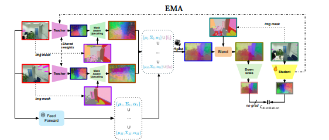
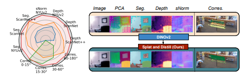

In this work, we propose Splat and Distill, a novel framework that...

Our method first lifts 2D features into a 3D Gaussian representation...

@inproceedings{shavin2026splat,
title={Splat and Distill: Augmenting Teachers with Feed-Forward 3D Reconstruction For 3D-Aware Distillation},
author={Shavin, David and Benaim, Sagie},
booktitle={ICLR},
year={2026}
}